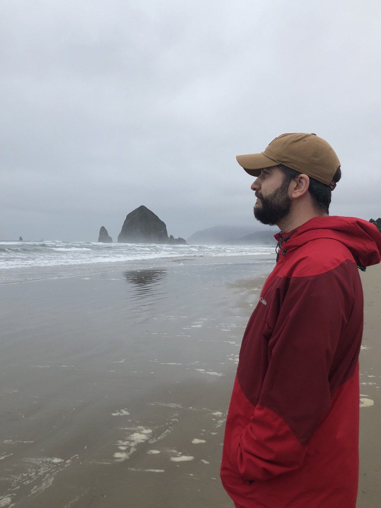

Owner Operated
The person you speak with is the person responsible for the work. No call centers, no layers of management, and no uncertainty about who is accountable.
Trust
Professional property care is about more than mowing lawns and trimming shrubs. It's about showing up when promised, communicating clearly, and taking ownership of the details.
About the Owner
Urban Yards is owner-operated by Tyler Gage, a Midwest native with a lifelong interest in gardening, landscape design, ecology, and restoration.
Over the years, that interest has grown through hands-on experimentation with a variety of approaches, from traditional horticulture and landscape maintenance to food forests, habitat creation, ecological restoration, and methods such as the Miyawaki approach to dense native planting.
That background influences how properties are cared for today: not just keeping outdoor spaces tidy, but considering soil health, plant communities, habitat, water use, and how landscapes feel for the people who live, work, and gather there.
The goal is simple: provide dependable groundskeeping and landscape care that makes properties cleaner, healthier, more welcoming, and more resilient over time.

Property Care Partner
Many landscaping companies focus on completing a service visit. Urban Yards focuses on becoming a trusted property care partner.
The person you speak with is the person responsible for the work. No call centers, no layers of management, and no uncertainty about who is accountable.
Questions are answered. Updates are provided. Expectations are clear. Property care should be easy to manage, not another task added to your day.
Clean edges, maintained planting beds, trimmed shrubs, tidy common areas, and thoughtful finishing touches help create properties that people notice.
Rather than simply reacting to problems, Urban Yards looks for ways to improve appearance, reduce maintenance challenges, and protect the value of your property over time.
Urban Yards
Whether it's a homeowner welcoming guests, a resident returning home, or a prospective tenant visiting a community for the first time, well-maintained outdoor spaces create a lasting impression.